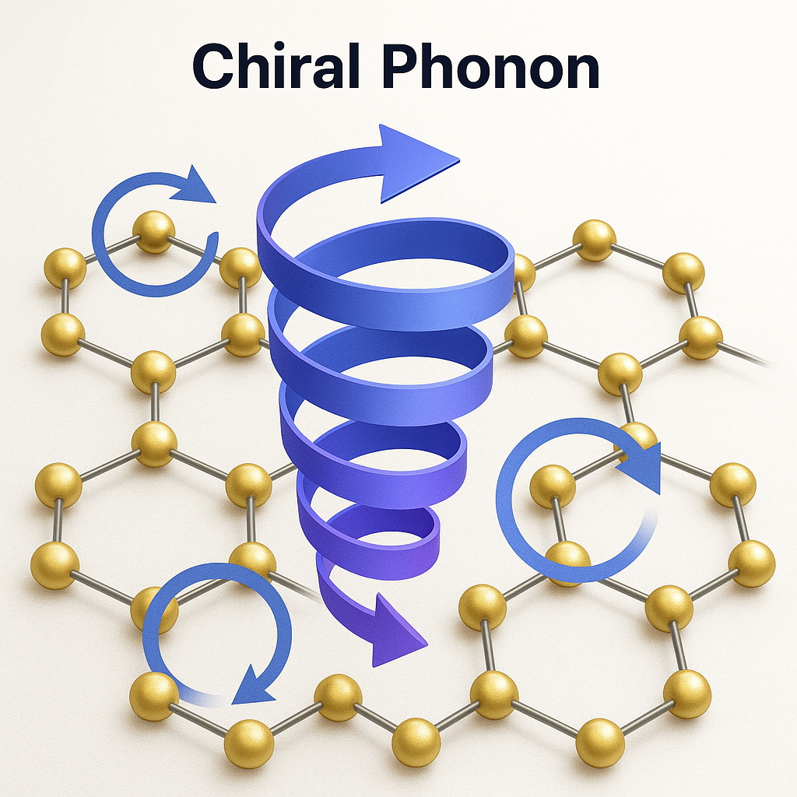
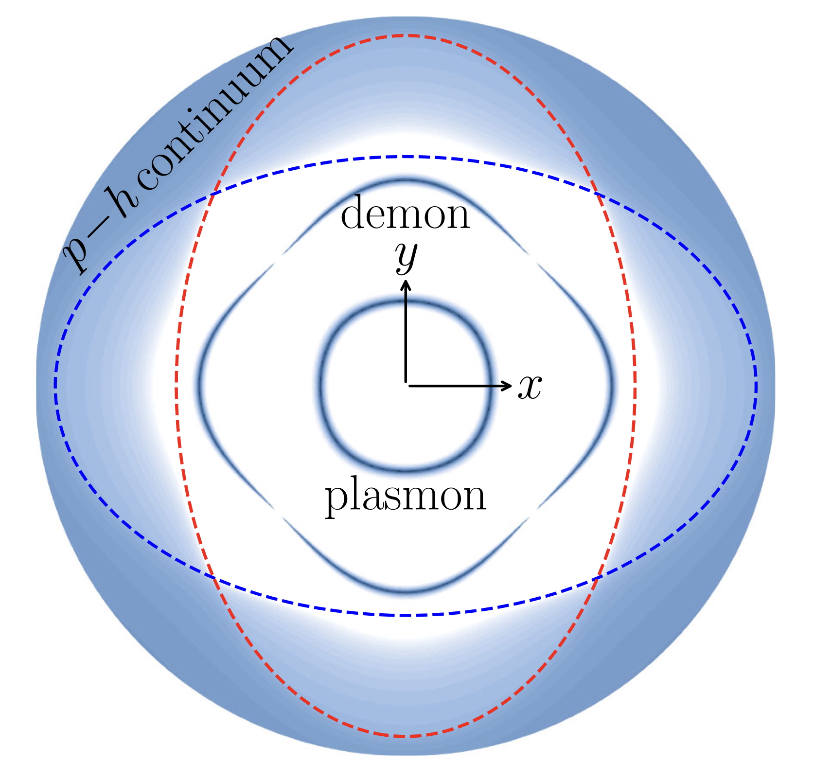
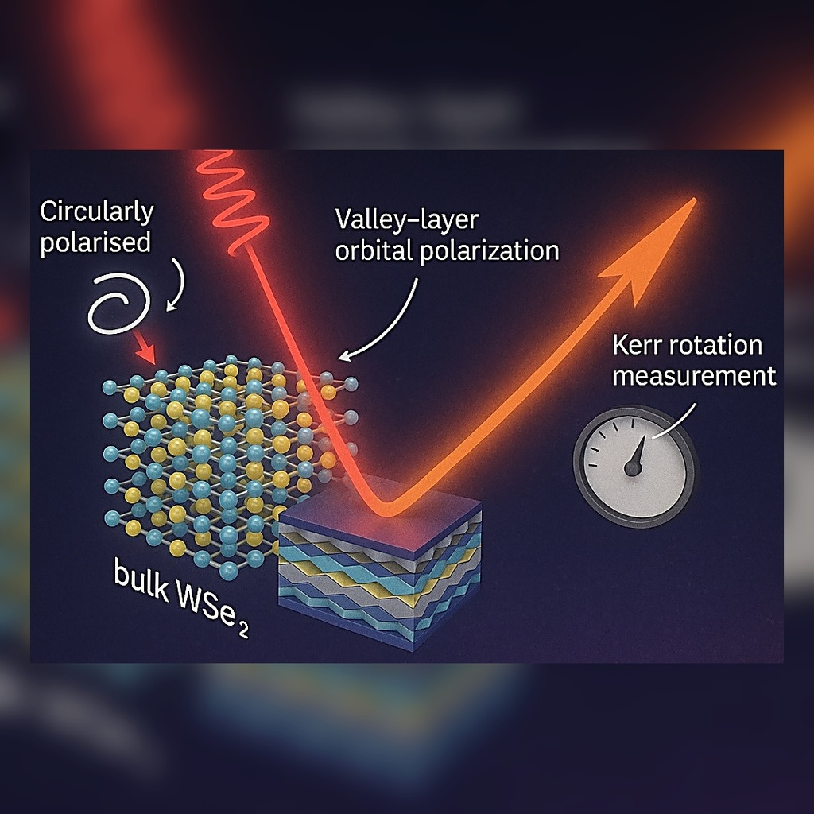
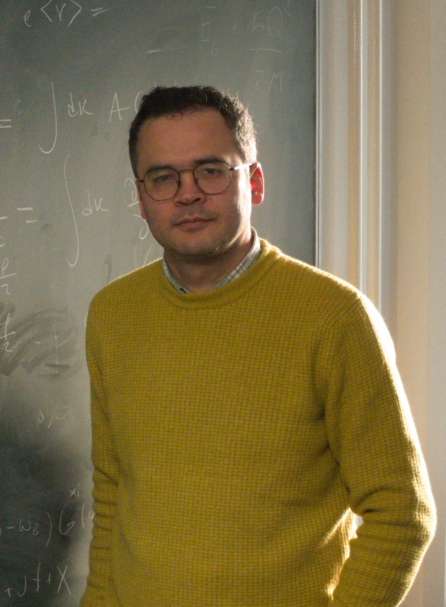
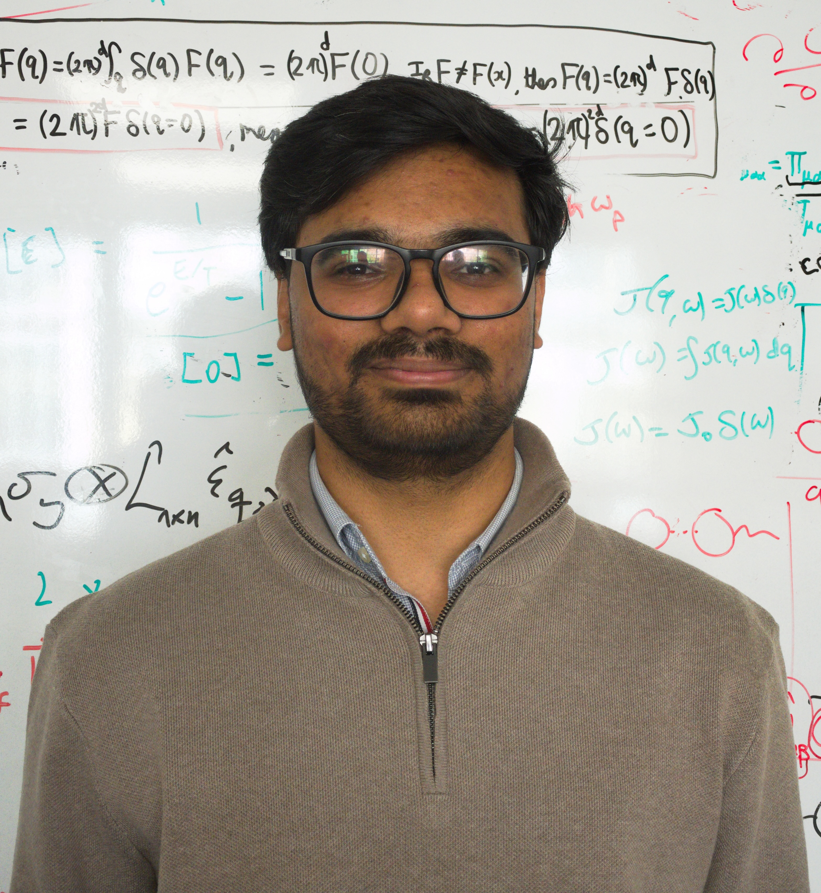
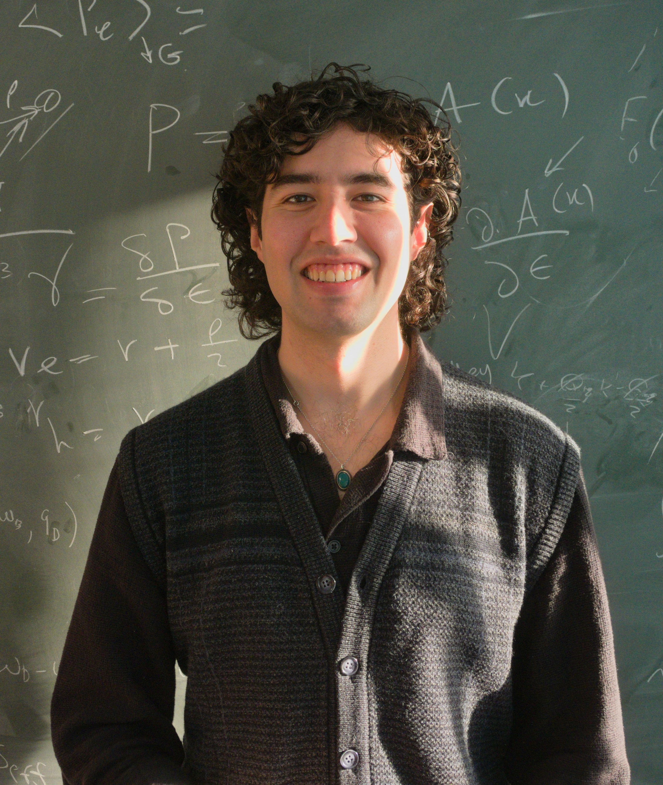
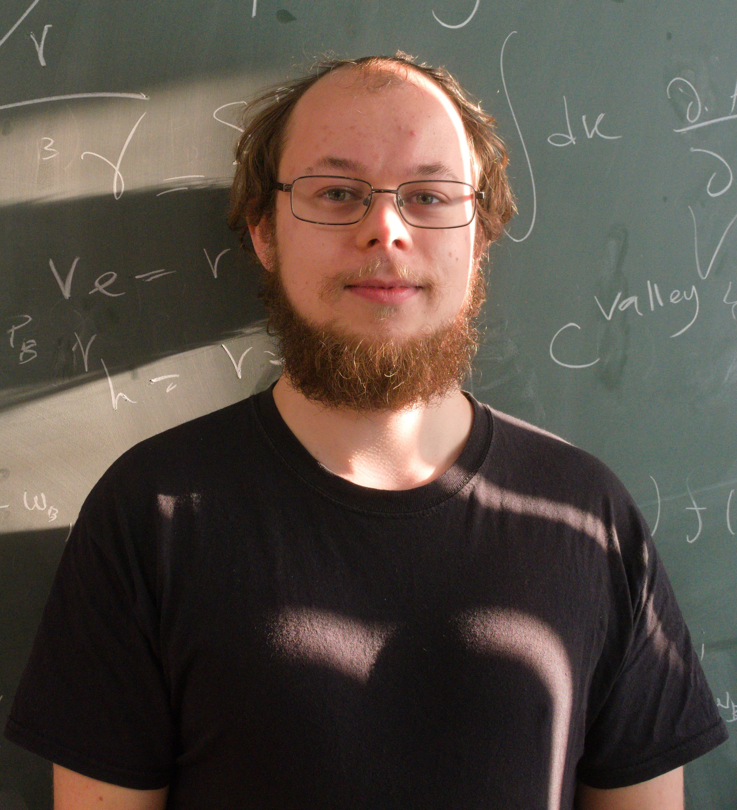
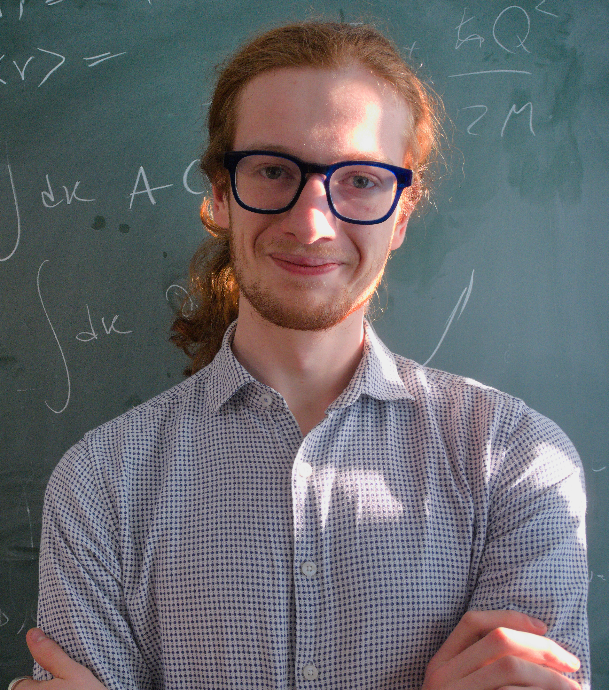

Chiral phonons
Juraschek, D.M., Geilhufe, R.M., Zhu, H. et al. (incl. Rostami, H.) Nature Physics 21, 1532–1540 (2025)
University of Bath Physics
We study quantum transport, nonlinear response theory, and many-body phenomena in quantum materials.

Juraschek, D.M., Geilhufe, R.M., Zhu, H. et al. (incl. Rostami, H.) Nature Physics 21, 1532–1540 (2025)

Habib Rostami and Johannes Hofmann · Phys. Rev. Lett. 135, 236701 (2025)

E. Cappelluti, H. Rostami, and F. Cilento · npj 2D Materials and Applications 9, 89 (2025)





Broadband, electrically tunable third-harmonic generation in graphene
Ultra-strong nonlinear optical processes and trigonal warping in MoS2 layers
Chiral phonons
Fermi liquid theory of d-wave altermagnets: demon modes and Fano-demon states
Acoustogalvanic effect in Dirac and Weyl semimetals
Gauge invariance and Ward identities in nonlinear response theory
Theory of plasmonic effects in nonlinear optics: the case of graphene
Theory of strain in single-layer transition metal dichalcogenides
Effective lattice Hamiltonian for monolayer MoS2: tailoring electronic structure with perpendicular fields
Online seminar series in condensed matter and atomic physics, with the aim to connect researchers working at different Nordic and UK universities
Department-wide colloquia with visiting and internal speakers.
Fermi liquid theory of d-wave altermagnets: demon modes and Fano-demon states published in PRL 135, 236701 (2025).
Hidden order revealed by light-driven Kerr rotation in centrosymmetric bulk WSe2 published in npj 2D Mater Appl 9, 89 (2025).
Quantum Geometry in Quantum Materials (University of Bath) · –
Quantum Geometric Injection and Shift Optical Forces Drive Coherent Phonons arXiv:2507.17814.
Welcome to Rufus, who joins the group to work on driven quantum materials.
Welcome to Shubham, who joins the group to work on nonlinear phononics and optics.
Renormalization group, universality, and critical behaviour in classical and quantum systems.
I am a condensed matter physicist and an assistant professor at the University of Bath, specializing in quantum many-body problems for real-world materials using analytical and numerical techniques, with expertise in quantum transport and light–matter interaction in 2D materials.
Department of Physics
University of Bath
Claverton Down, Bath BA2 7AY, UK
Building/Room: 8 West 3.05